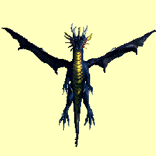
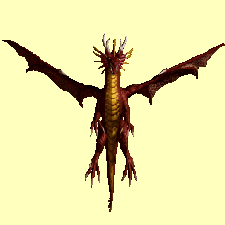

Draci
 |
 |  |
Výskyt: Populace drakù neni na Antagarichu tolik poèetná jako napø. ve vedlej¹ím Enrothu. Jejich výskyt se proto omezuje pøedev¹ím na oblast Eofolu a v nìm pøítomnou Draèí jeskyni. Pár tìchto tvorù záhlednéte i v Titánské pevnosti v Avlee a nesmíme samozøejmì zapomenout i na jednoho z "nejslavnìj¹ích" drakù tohoto kontinentu. Je jím samotný modrý drak Wromthrax, kterého nalezneme ve Wromthraxovo jeskyni v Tatalii.
Zelený drak |
Modrý drak |
Rudý drak |
|
| Level | 80 | 90 | 100 |
| Body zdraví | 880 | 1080 | 1300 |
| Tøída zbroje | 60 | 80 | 100 |
| Umí létat | ano | ano | ano |
| Povaha | agresivní | agresivní | agresivní |
| Pohyblivost | vysoká | støední | nízká |
| Cílení | 2 | 3 | 4 |
| Zku¹enosti za zabití | 7200 | 9000 | 11000 |
| Útok 1 (hlavní) | vzduch, 12D8 | voda, 14D8 | oheò, 16D8 |
| Útok 2 | - | - | - |
| Vyu¾ití útoku 2 | - | - | - |
| Kouzlo 1 | - | - | - |
| Vyu¾ití kouzla 1 | - | - | - |
| Kouzlo 2 | - | - | - |
| Vyu¾ití kouzla 2 | - | - | - |
| Odolnost proti ohni | 50 | 50 | imunní |
| Odolnost proti vzduchu | imunní | 50 | 70 |
| Odolnost proti vodì | 50 | imunní | 70 |
| Odolnost proti zemi | 50 | 50 | 70 |
| Odolnost proti mysli | 50 | 50 | 70 |
| Odolnost proti duchu | 15 | 15 | 15 |
| Odolnost proti tìlu | imunní | imunní | imunní |
| Odolnost proti svìtlu | 30 | 30 | 30 |
| Odolnost proti temnotì | 30 | 30 | 30 |
| Odolnost proti fyzickému útoku | 50 | 50 | 70 |
| Speciální schopnosti | - | - | rozbíjí zbroj |
| Poklad | 250D10+L6 | 300D10+L6 | 400D10+L6 |
copyright 2002 - 2022 by Petr 'Elemir' Levák v¹echna práva vyhrazena